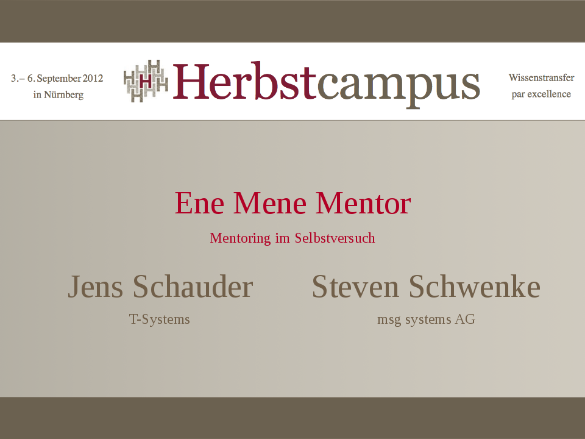
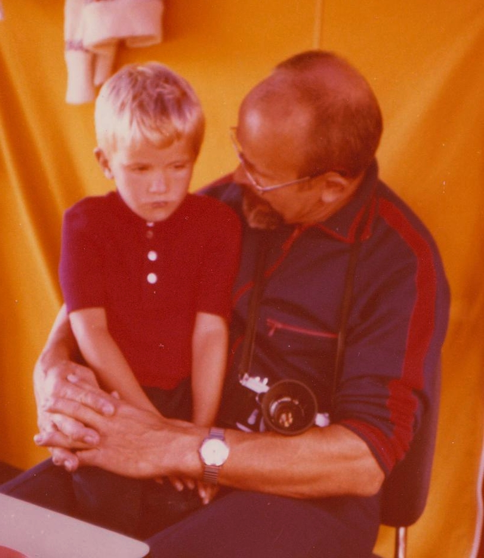
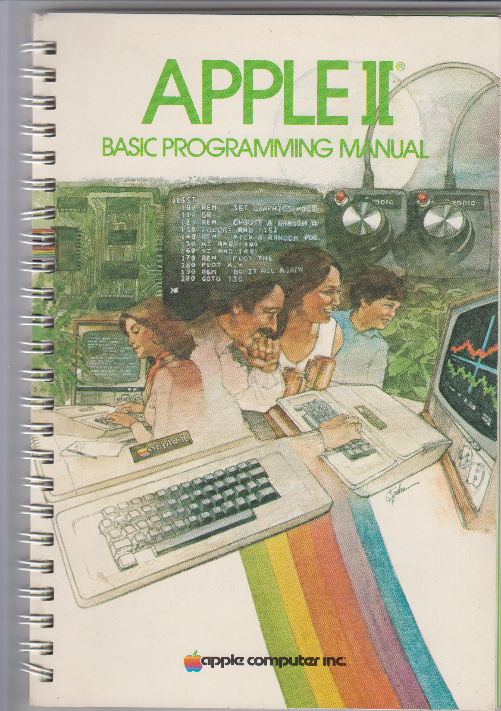
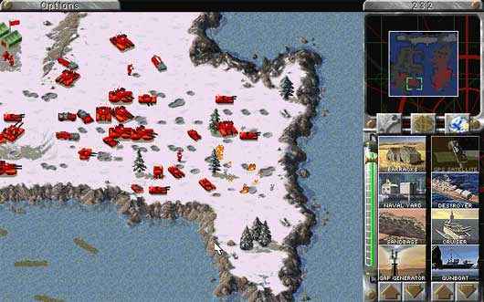
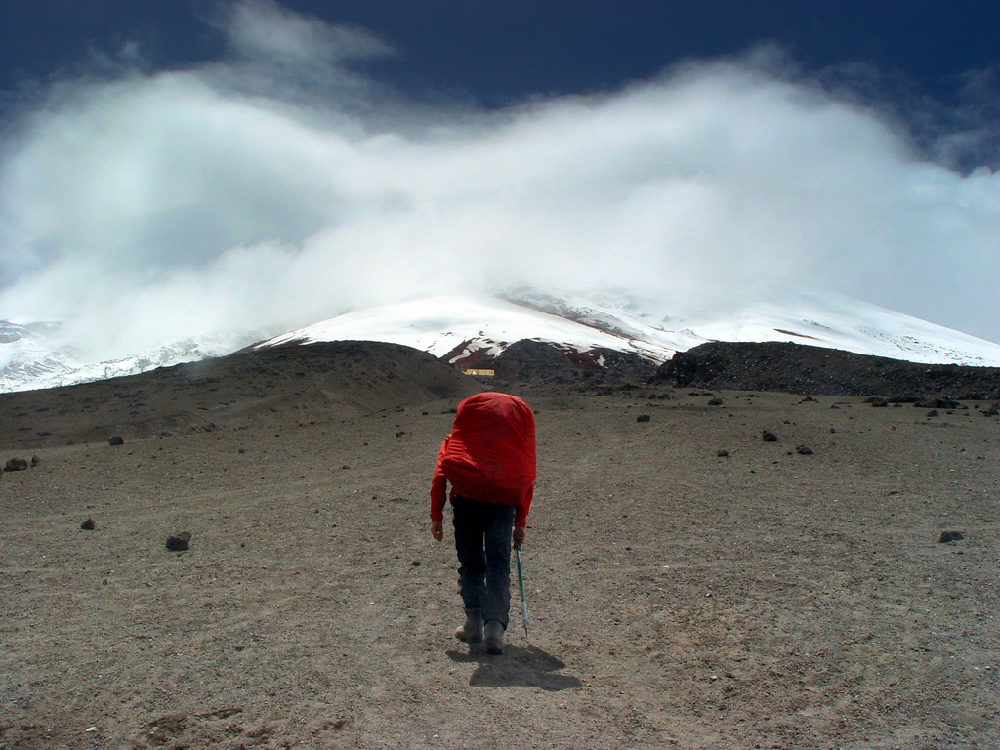
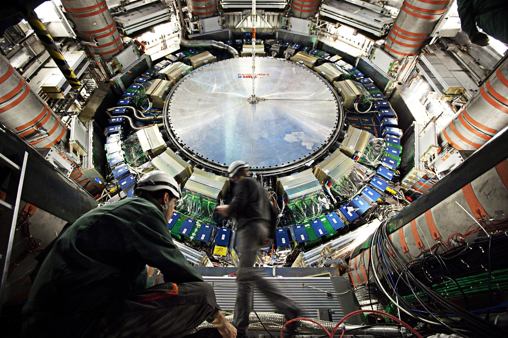
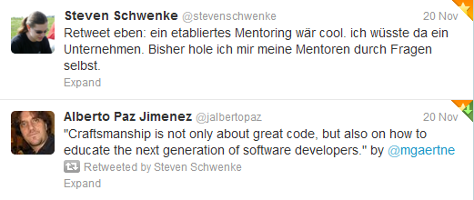
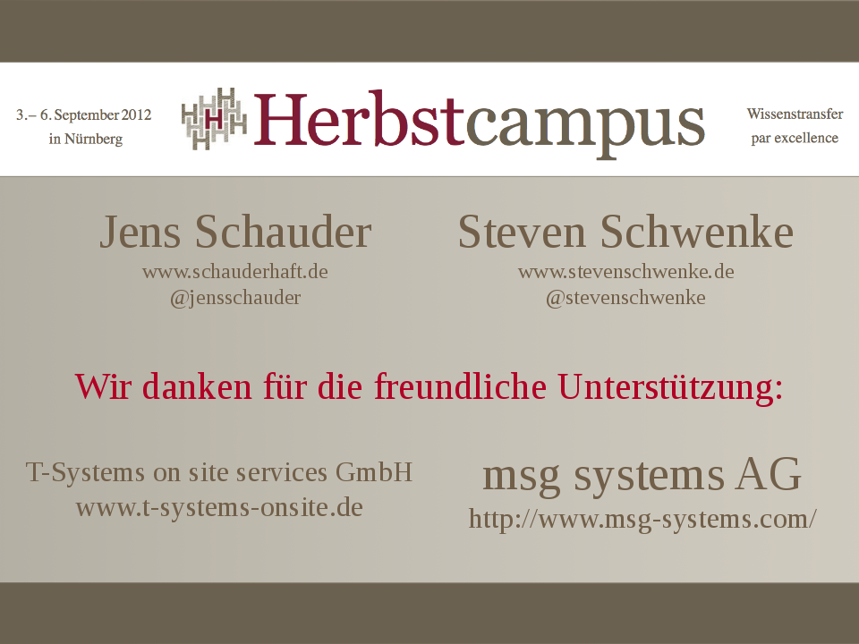

Mitschüler
... mit denen man gemeinsam lernt
Lehrer
... die eine zu Jugend forscht lotsen
Kollegen
... die einen zur JAX mitnehmen
The good advice
you just didn't take
Alanis Morissette / Ironic

Erster Arbeitgeber,
neue Ziele.


(Atlas Detector, CERN)

Mission Statement:
- Offenheit
- Ehrlichkeit
- Exit-Strategie ohne "hard feelings"
Steven "Killer-Feature" Mentoring:
- Commitment.
- Beidseitige Weiterentwicklung.
Jens "Killer-Feature" Mentoring:
- Reflektion eigener Ideen durch Gruppengespräche
- organisierte Peer-Group für eigene Ideen
Werkzeuge:
- Treffen einmal pro Monat:
- Gespräch
- Buchvorstellung
- "Was gelernt?"
- Commitment: Stets Fragen stellen können
Werkzeuge:
- Technische Fragen stellen
- Rat holen
- Commitment: Jederzeit, z.B. per Handy
Werkzeuge:
- Entwürfe Blog-Artikel gegenlesen
- Commitment: Ehrlichkeit, no hard feelings auf Empfängerseite
Werkzeuge:
- Gemeinsame Vorträge, Konferenzen
- Commitment: Gegenseitig fördern (soweit möglich)
Eine großartige Erfahrung
Jeder sollte einen Ment[or/ee] haben
Zukunft:
- evtl. Ortswechsel
- agiles Anpassen Mentoring
- Offenheit, Ehrlichkeit, konstruktive Kommunikation
Zukunft:
- "Konvergenz" des Mentorings
- Kompliment schnell lernender Mentee + gut lehrender Mentor
Zukunft:
- gegenseitig im Auge behalten
- spätere fachliche Kontakte
- Vitamin B
Konzepte:
- "halbe" Mentoren
- organisiertes M. in Unternehmen
- freiwilliges M.
- freiwilliges organisiertes M. (Freimaurer, Lions Club, Maybach-Foundation)
Überall Mentees / Mentoren
Auch hier im Raum!
